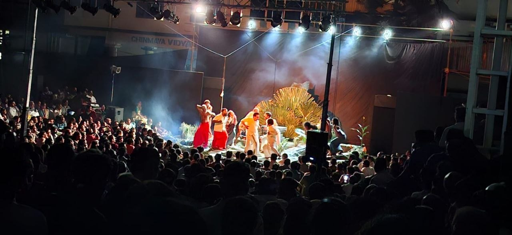
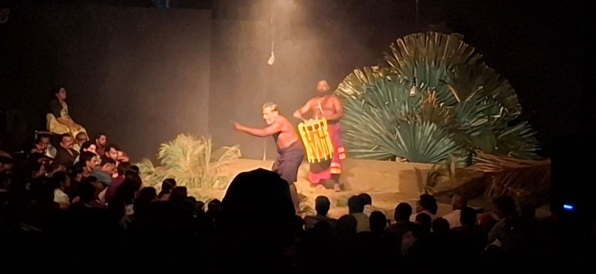
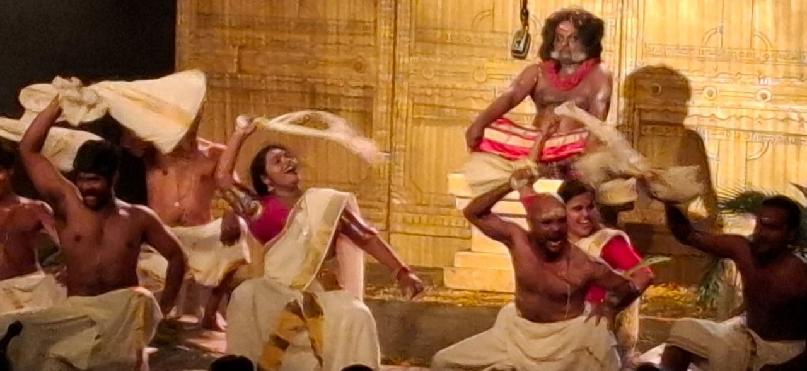
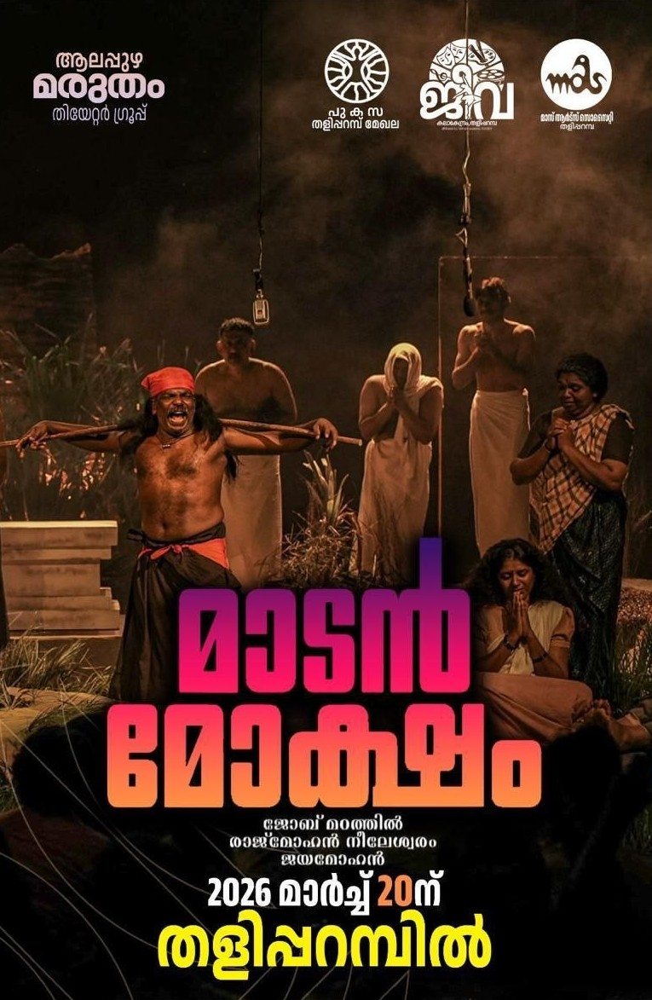

Author: ആലപ്പുഴ മരുതം തിയറ്റർ ഗ്രൂപ്പ്
Review by: സക്കറിയാസ് കെ ജെ

മാടൻ മോക്ഷം നാടകം അരീനാ തിയേറ്ററിൻ്റെ (ചുറ്റുമിരിക്കുന്ന പ്രേക്ഷകരുടെ മധ്യത്തിൽ നാടകമവതരിപ്പിക്കുന്ന രീതി)സാധ്യത പരീക്ഷിച്ച അല്ലെങ്കിൽ പ്രയോജനപ്പെടുത്തിയ നാടകമായിരുന്നു. (ഇവിടെ, മൂന്നു വശവുമിരിക്കുന്ന പ്രേക്ഷകർ). ഫലിത രൂപേണയുള്ള സാമൂഹിക വിമർശനമാണ് നാടകത്തിൻ്റെ കാതൽ. ചൂടുചാരായവും, ഇറച്ചിയുമൊക്കെ കഴിച്ചു വിരാജിക്കുന്ന (😊) കീഴാള ദൈവമായ മാടനെ മാലയും ചന്ദനവുമൊക്കെ ചാർത്തി പ്രതിഷ്ഠിച്ച് ഹിന്ദുത്വത്തിലേക്ക് ആവഹിക്കുന്നതിൻ്റെ ശക്തമായ ആവിഷ്ക്കാരമാണ് നാടകം.

കേരളത്തിലല്ലെങ്കിൽ ഒരു പക്ഷേ വലിയ പ്രശ്നങ്ങളെ അഭിമുഖീകരിക്കേണ്ടി വന്നേക്കാവുന്ന ഒരു അവതരണം. ദളിത് സമൂഹത്തിൻ്റെ വിശ്വാസ-സാമൂഹിക- സാംസ്കാരിക അവകാശങ്ങളുടെ മേൽ കടന്നുകയറ്റം നടത്തുന്ന വരേണ്യ വർഗ്ഗത്തിൻ്റെ പൊള്ളയായ ചെയ്തികളെ എടുത്തു കാട്ടി ആക്ഷേപിക്കുന്നു എന്നു മാത്രമല്ല, നമ്മുടെ സമകാലിക സംസ്കാരിക പരിവർത്തനത്തെ കൂടി പ്രതിഫലിപ്പിക്കുന്നു,നാടകം.മാടനെന്ന ദളിത് ദൈവവും മാടൻ്റെ പൂജാരിയായി വർത്തിക്കുന്ന കുഞ്ഞനെന്ന സാധാരണക്കാരനുമാണ് കേന്ദ്ര കഥാപാത്രങ്ങൾ. ഇതിൽ നിറഞ്ഞാടാനുള്ള അവസരം കുഞ്ഞനാണു ലഭിച്ചിട്ടുള്ളത്. പ്രമോദ് വെളിയനാട് ആ റോൾ ഭംഗിയായി ചെയ്തിരിക്കുന്നു. എന്നാൽ സൗണ്ട് സിസ്റ്റത്തിൻ്റെ പോരായ്മയോ, പ്രമോദിൻ്റെ സംഭാഷണത്തിലെ ഇമോഷണൽ സ്പീഡോ ചില സംഭാഷണങ്ങളെയെങ്കിലും അവ്യക്തമാക്കുന്നമുണ്ട്.

ഇന്നത്തെ വിശ്വാസി സമൂഹത്തിൻ്റെ ഉപരിപ്ലവ ചെയ്തികളെ (മെഗാ തിരുവാതിര, മാടൻഈ വീടിൻ്റെ ഐശ്വര്യം, മാടൻ ചിക്കൻ സെൻ്റർ, മാടൻ ബസ് സർവ്വീസ്, കരുണാമയനാം ദൈവമൊണ്ണ (മലയാളിയല്ലാത്ത കലക്ടർ പാടുന്നത്) ഒക്കെ എണ്ണിപ്പറഞ്ഞ് പരിഹസിക്കുന്നതു കൂടാതെ "തുടരുന്ന വിസ്മയവു" മൊക്കെ ഓർത്തു പറഞ്ഞ് പ്രേക്ഷകരിൽ ചിരി ഉണർത്തുന്നുണ്ട് പ്രമോദ്. മാടൻ തറ അവിടേക്കെത്തുന്ന ഒന്നോ രണ്ടോ വഴികൾ, അടുത്തുള്ള ജലായം, ചതുപ്പ് ഒക്കെ രംഗവേദിയിൽ യഥാതഥമായി സൃഷ്ടിക്കയായിരുന്നു. (ഇതിനു തന്നെ 70000 രൂപ ചെലവായെന്നു കേൾക്കുന്നു..) നാടകത്തിൻ്റെ പശ്ചാത്തല സംഗീതത്തിന് ചിലപ്പോഴെങ്കിലും പോരായ്മ തോന്നിയെങ്കിലും, ലൈറ്റിംഗ് വളരെ മനോഹരമായി തോന്നി. ടൈമിംഗും ഗംഭീരം. ചില സ്ഥലങ്ങളിൽ ഇഴച്ചിൽ അനുഭവപ്പെട്ടെങ്കിലും മൊത്തത്തിൻ നാടകത്തെ ശക്തമായി ആവിഷ്കരിച്ചിട്ടുണ്ട് സംവിധായകൻ. പ്രത്യേകിച്ചും ഏറെ കഥാപാത്രങ്ങളുള്ള ഈ നാടകത്തെ കലാത്മകമായി പരിചയിപ്പിച്ചെടുക്കുന്നതിൽ....
🎥 നാടകത്തെക്കുറിച്ച്

ആരാധനയുമായി ബന്ധപ്പെട്ട പരമ്പരാഗത ആചാരങ്ങൾ പലപ്പോഴും സർവ്വശക്തനെക്കാൾ ശക്തമായിത്തീരുന്നു. ഈ ആചാരങ്ങളെ നിർവചിക്കാനുള്ള അധികാരം പുരോഹിതശക്തി വഹിക്കുന്നവർക്കാണ്, അവർ സൃഷ്ടിക്കുന്ന പാരമ്പര്യങ്ങൾക്ക് ജീവനുള്ള ദൈവങ്ങളെ ക്ഷേത്രഭിത്തികൾക്കുള്ളിൽ ഒതുങ്ങിനിൽക്കുന്ന ചലനരഹിതമായ വിഗ്രഹങ്ങളാക്കി മാറ്റാൻ കഴിയും.
എഴുത്തുകാരൻ ജയമോഹന്റെ കൃതിയെ അടിസ്ഥാനമാക്കി, രാജ്മോഹൻ നീലേശ്വരം എഴുതി ജോബ് മഠത്തിൽ സംവിധാനം ചെയ്ത "മാടൻ മോക്ഷം" എന്ന നാടകം, മനുഷ്യ സ്ഥാപനങ്ങൾ രൂപപ്പെടുത്തിയ ദൈവങ്ങളുടെ നിസ്സഹായതയെ ചിത്രീകരിക്കുന്നു. തമിഴ്നാട്ടിലെ ദളിത് കാർഷിക സമൂഹങ്ങൾ ആരാധിക്കുന്ന ഗ്രാമീണ കാവൽ ദേവനായ മാടൻറെ കഥയാണ് ഈ നാടകം പറയുന്നത്. സ്വർഗ്ഗീയ ദൈവങ്ങളിൽ നിന്ന് വ്യത്യസ്തമായി, മാടൻ ഭൂമിയിൽ ബന്ധിതനായ ഒരു ദൈവമാണ്, അവൻ ജനങ്ങളുടെ ഇടയിൽ ജീവിക്കുകയും അവരുടെ കഷ്ടപ്പാടുകൾ പങ്കിടുകയും കാവ് എന്നറിയപ്പെടുന്ന തുറന്ന ആരാധനാലയങ്ങളിൽ കള്ള്, കോഴി, ചുരുട്ട് തുടങ്ങിയ വഴിപാടുകൾ സ്വീകരിക്കുകയും ചെയ്യുന്നു.
സാമൂഹികവും മതപരവുമായ പരിവർത്തനങ്ങൾ സംഭവിക്കുമ്പോൾ, മാടൻ ഭക്തർ ക്രമേണ അവനെ ഉപേക്ഷിക്കുന്നു. ഒരിക്കൽ വിശ്വാസത്തെ ശക്തിപ്പെടുത്തിയിരുന്ന രോഗങ്ങളെക്കുറിച്ചുള്ള ഭയം ശാസ്ത്ര പുരോഗതി ഇല്ലാതാക്കുകയും നിരവധി അനുയായികൾ പുതിയ മതപാതകൾ സ്വീകരിക്കുകയും ചെയ്യുന്നു. ഒരു ഗ്രാമീണ നാടോടി ദേവതയായി ഇനി നിലനിൽക്കാൻ കഴിയില്ലെന്ന് മനസ്സിലാക്കിയ മാടൻ, "ആകാശ ദേവന്മാർ"ക്കിടയിൽ മതിലുകൾക്കുള്ളിൽ വസിക്കുന്ന ഒരു ക്ഷേത്ര ദേവനായി സ്വയം രൂപാന്തരപ്പെടാൻ ഉപദേശിക്കുന്നു.
തുറന്ന ആരാധനയിലും ഉൾക്കൊള്ളുന്ന ആചാരങ്ങളിലും കേന്ദ്രീകരിച്ചുള്ള ഒരു നാടോടി പാരമ്പര്യമായ കാവ് സംസ്കാരത്തിനും, അടച്ചിട്ട ക്ഷേത്രങ്ങൾ, വിശുദ്ധി നിയമങ്ങൾ, പുരോഹിത അധികാരം എന്നിവയാൽ അടയാളപ്പെടുത്തിയ ഒരു ബ്രാഹ്മണ സമ്പ്രദായമായ ക്ഷേത്ര സംസ്കാരത്തിനും ഇടയിലുള്ള കേരളത്തിലെ ഒരു വലിയ സാംസ്കാരിക മാറ്റത്തെ ഈ നാടകം പ്രതിഫലിപ്പിക്കുന്നു. കാലക്രമേണ, ക്ഷേത്ര സംസ്കാരം പഴയ കാവ് പാരമ്പര്യങ്ങളെ സ്വാംശീകരിച്ച് ആധിപത്യം സ്ഥാപിച്ചു, ഗ്രാമദേവന്മാരെ പുനർവ്യാഖ്യാനിച്ചു, പുണ്യകോട്ടകളെ ക്ഷേത്രങ്ങളാക്കി മാറ്റി, ആചാരങ്ങളെയും പുരാണങ്ങളെയും പുനർനിർവചിച്ചു.
കേരള സമൂഹത്തിലെ വിശാലമായ നവ-യാഥാസ്ഥിതിക വഴിത്തിരിവിന്റെ ഭാഗമായി "മാടൻ മോക്ഷം" ക്ഷേത്രവൽക്കരണ പ്രക്രിയയെ ചിത്രീകരിക്കുന്നു. ക്ഷേത്ര മതിലുകൾക്ക് പുറത്ത് ഒരു കുട്ടിയുടെ നിലവിളിയോടെയാണ് നാടകം അവസാനിക്കുന്നത്, പഴയ ജീവിത പാരമ്പര്യങ്ങളുടെ നഷ്ടത്തെയും അവർക്ക് ഒരു ദിവസം സ്വാതന്ത്ര്യം വീണ്ടെടുക്കാനാകുമെന്ന പ്രതീക്ഷയെയും പ്രതീകപ്പെടുത്തുന്നു.